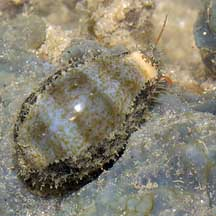
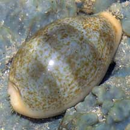
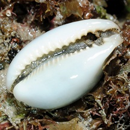
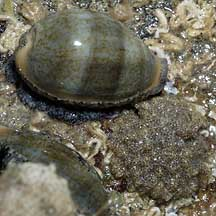
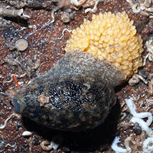
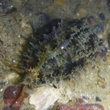
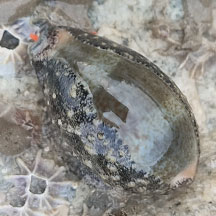
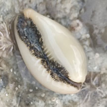
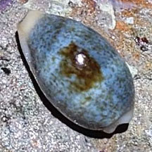

|
|
| shelled snails text index | photo index |
| Phylum Mollusca > Class Gastropoda > Family Cypraeidea |
| Ovum
cowrie Erronea ovum Family Cypraeidae updated Jul 2020
Where seen? This little cowrie is commonly seen on our Northern shores usually under stones, but sometimes crawling about in the open. Sometimes also seen on our Southern shores among coral rubble. It was previously known as Cypraea ovum. Features: 2-3cm. Shell pear-shaped, generally pale blue with 3 broad pale brown bands and small brown speckles all over. Sometimes, but not always, with a big brown blotch in the middle. There are no brown spots at the front tip of the shell. Underside white with 'teeth' that are tinged yellow or orange. The living animal has a dark mottled mantle. Sometimes confused with the Wandering cowrie (Cypraea errones) which is similar but is cylindrical in shape. It does not have coloured 'teeth' and has a brown spot or spots at the front end of the shell. Here's more on how to tell apart Wandering and Ovum cowries. When the shell is completely covered in its mantle, it is sometimes mistaken for a sea slug. Here's more on how to tell apart slugs and animals that look like slugs. |
 St. John's Island, Jun 07 |
 |
 'Teeth' are coloured. |
| Leave cowries alone: A mother cowrie stays over her eggs after she lays them, covering the egg mass (usually yellowish) with her foot. So if you see a cowrie under a stone, please don't rip it off. You might inadvertently separate a mother from her eggs! |
|
 Mama cowrie with her egg mass. Chek Jawa, Oct 03 |
 Mama cowrie protecting her egg mass with her foot. Changi, Jun 12 |
 Sentosa Serapong, May 16 Photo shared by Ivan Kwan on facebook. |
| Ovum cowries on Singapore shores |
On wildsingapore
flickr
|
| Other sightings on Singapore shores |
 Seringat-Kias mangrove lagoon, Sep 25  Photo shared by Tommy Tan on facebook. |
 Pulau Jong, Aug 25 |
|
Links
References
|